Locations
Zanarkand
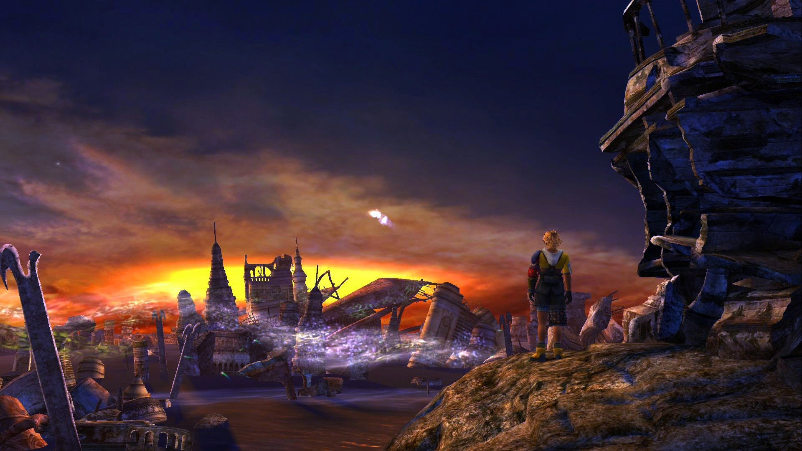
A city dead for a thousand years. A city I had to see with my own eyes. The end of Yuna's journey. The last chapter in my story.
- Tidus
Zanarkand is a former metropolis at Spira's northernmost edge in Final Fantasy X and Final Fantasy X-2. In the English localization, Zanarkand is pronounced [ˈzæ.nɚ.kənd]. In modern days, it is an ancient holy site.
There are, in fact, two Zanarkands: the real Zanarkand that was annihilated by Sin at the end of the Machina War against Bevelle 1000 years ago, and the Dream Zanarkand, the exact reproduction of what Zanarkand was before its destruction, created directly from the memories of its former inhabitants.
Besaid Island
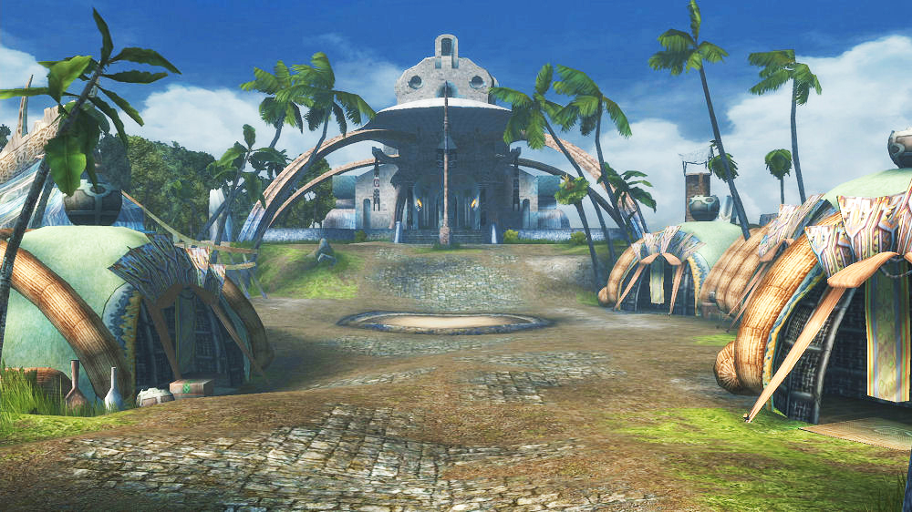
Besaid Island [biˈseɪd] is a location from Final Fantasy X and Final Fantasy X-2. It is a small tropical island at the southernmost point of the world of Spira. The island features a large beach and seaport, a small village surrounded by forests and waterfalls, and a temple of Yevon. The island has a blitzball team called Besaid Aurochs, notorious for being the worst team in the Spiran league. Besaid houses a chapter of the Crusaders, a military branch of Yevon, led by Luzzu.
Ten years ago Summoner Braska arrived in Besaid during his pilgrimage and fell in love with the island's peace. He asked his guardian Auron to bring his daughter Yuna to come live in Besaid after his pilgrimage would be over. After Braska performed the Final Summoning and perished, Auron passed down the request to a Ronso named Kimahri who brought Yuna to Besaid and stayed by her side on her request. Yuna became an apprentice summoner, wishing to follow in her father's footsteps.
Calm Lands
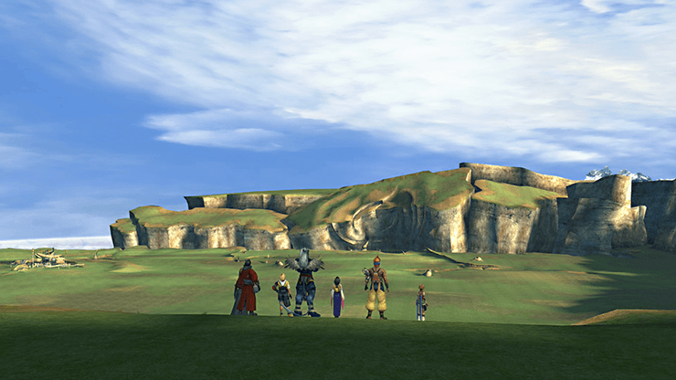
The Calm Lands. Long ago, the high summoners fought Sin here. The road ends here. Beyond, there're no towns, no villages. Only endless plains.
- Lulu
The Calm Lands is an expanse of wide plains in Final Fantasy X and Final Fantasy X-2. The plains stretch between Macalania and Mt. Gagazet, and summoners cross them on their pilgrimage to Zanarkand. The Calm Lands is where the final battle with Sin was once fought, forming a ravine to its north that has since been dubbed "the Scar." The middle of the Calm Lands hosts a shop. The Cavern of the Stolen Fayth lies to the north, at the foot of the Mt. Gagazet.
Yuna and her guardians cross the Calm Lands on her pilgrimage to Zanarkand, but as they have been labeled heretics and criminals they are being pursued by Yevon. They learn how the gorge that divides the plains was formed in the battle between Lord Gandof and Sin four hundred years ago.
Thunder Plains
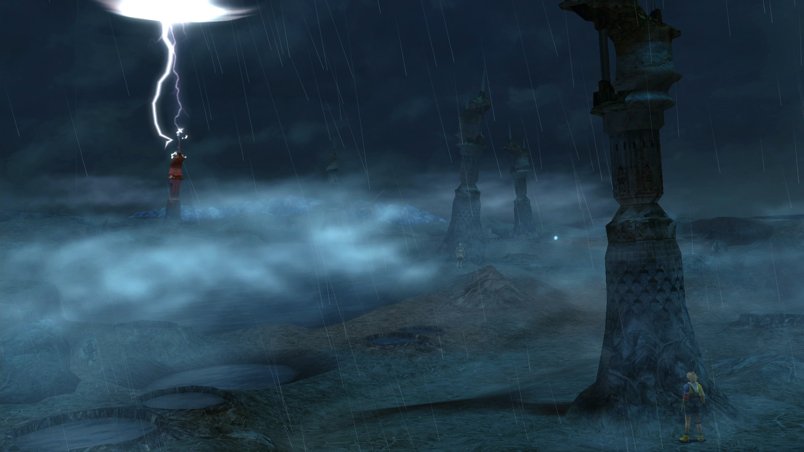
Plains of lightning, plains of thunder, those who cross are torn asunder.
- Maechen
The Thunder Plains, also known as the Gandof Thunder Plains, is an open, barren landscape connecting Guadosalam to Macalania Woods in Final Fantasy X and Final Fantasy X-2. It is constantly bombarded by rain and lightning bolts.
Long ago, crossing the plains was dangerous due to the never-ending storm, until an Al Bhed named Bilghen set up several towering lightning rods. Ironically, he was in the process of setting up the final tower when he was struck by lightning and killed. In Final Fantasy X, the plains are still treacherous, but the towers draw most of the lightning away. The plains are named after High Summoner Gandof who removed the threat of Qactuars from the Djose continent by driving them to the Thunder Plains and sealing them into Qactuar Stones.
Kilika Island
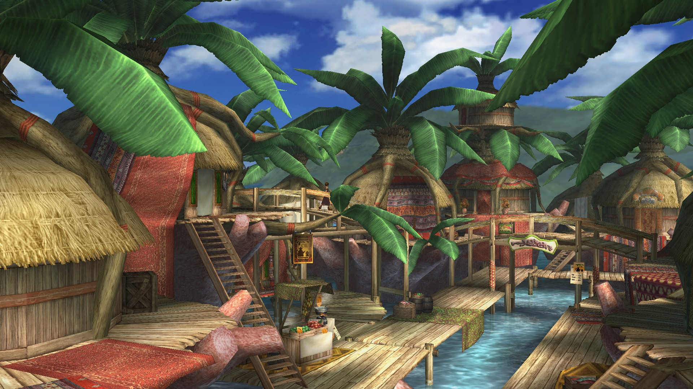
Kilika ['kɪ.lɪ.kə] is an island off the southern coast of the Spira mainland, consisting of a small port and village, a large jungle and a Temple of Yevon. The island is home to the Kilika Beasts blitzball team, and is the hometown of High Summoner Ohalland.
Kilika Temple is one of Yevon's temples situated on a fire mountain, is located on the far side of the woods north of Kilika Port. The flames around the temple change color when a summoner prays for the power of the aeon, Ifrit, or when visited by priests and Yevonites. Should the flame turn blue, it means the temple is in danger.
Luca
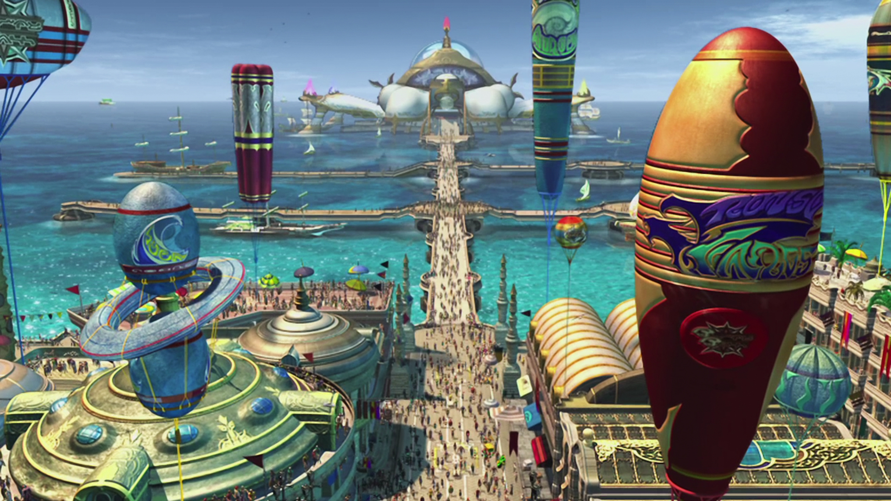
Luca is a port at the southern tip of Spira's main continent in Final Fantasy X and Final Fantasy X-2. Luca houses Spira's only blitzball stadium, and is the home of the Luca Goers, one of the best teams in the league.
Luca is the second largest city in Spira, after Bevelle. Due to its location, Luca is a thriving economic hub, trading with the islands of Besaid and Kilika, and even the Al Bhed. It brings in visitors from all over Spira for the blitzball tournaments, and enjoys cultural influence thanks to the sport. Luca is connected to Djose Temple via the Mi'ihen and Djose Highroads.
Mi'ihen Highroad
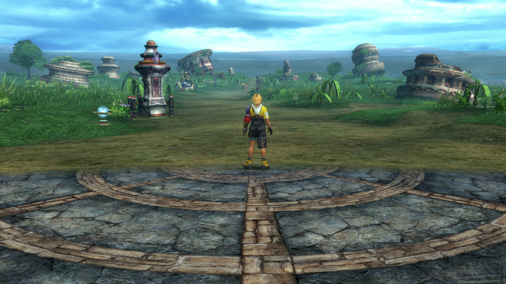
This is a statue of Lord Mi'ihen. Eight centuries ago, he founded a legion known today as the Crusaders. In just a few short years after their founding, their ranks grew throughout Spira. The maesters of Yevon feared an uprising and accused them of rebellion. So Lord Mi'ihen walked along this very road to go face their charges and refute them. He succeeded in winning the maesters' trust, and his legion became an arm of the Yevon clergy.
- Maechen
Mi'ihen Highroad is a road between the city of Luca and Mushroom Rock Road in Final Fantasy X and Final Fantasy X-2. Mi'ihen Highroad is a dirt road through wide open plains. Ruins lie along the sides while the path winds through canyons, sea and mountain cliffs before leading to Mushroom Rock.
The road was named for Lord Mi'ihen, the founder of the Crusaders, then called the Crimson Blades, who walked the old path on his way to Bevelle to answer the challenge that his group was a threat to Yevon. It is called a highroad because of both its altitude in relation to Luca, and because Mi'ihen walked the "highroad" when he decided to face the maesters of Yevon instead of antagonizing them. Five hundred years ago the highroad was destroyed by Sin, and a new road was constructed to its place. The old highroad became known as the "old road".
Guadosalam

Summoners usually just pass through on their way elsewhere.
- Lulu
Guadosalam /gwadosə'ɫam/ is the city of the Guado where the gateway to the Farplane is situated in Final Fantasy X and Final Fantasy X-2. The city sits on the path from the north bank of the Moonflow and the southern trail of the Thunder Plains. It comprises three levels with the exits at the bottommost points, the path to the Farplane on the upper level, and the Palace—residence of the current leader—at the center. The city is inside an underground cavern where the walls and walkways are the twisted roots of the trees of the Moonflow's north bank and the city resembles an underground swamp.
Mushroom Rock Road

Mushroom Rock Road is a road and mountain formation between Djose and Mi'ihen Highroad in Final Fantasy X and Final Fantasy X-2. The area is chiefly known as the site of the ill-fated Operation Mi'ihen where the Crusaders and the Al Bhed join forces to defeat Sin.
Mushroom Rock roadway is a sea reef cover cliff side, after years of high waves and attacks from fiends, Sinspawn and Sin has eroded the cliff and sea reefs to look like giant mushrooms made out of rocks, forming hidden pathways and secrets caves. One such secret cave is the Den of Woe visited in Final Fantasy X-2.
Djose
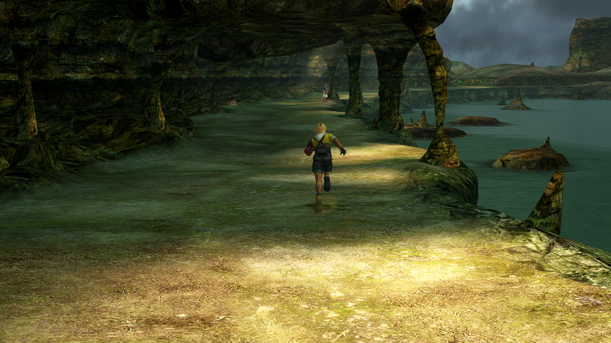
Djose ['dʒo.zeɪ] is a region of the main continent of Spira in Final Fantasy X and Final Fantasy X-2. It is primarily a highroad running between the area of Mushroom Rock Road and the Moonflow. At the junction before entering the Moonflow road, a short path leads the way to Djose Temple the only notable feature in the area.
The temple is situated at the end of the highroad and is powered by the lightning element. Its architecture resembles the summon Alexander from previous Final Fantasy games. It is surrounded and protected by Lightning Mushroom Rock, rocks which usually cover the temple and hover if there is a summoner praying to the fayth. As the rocks are held in place by electricity, they appear to be magnetic. The temple's fayth is a man, plainly dressed, possibly a resident of the area from times past.
Moonflow
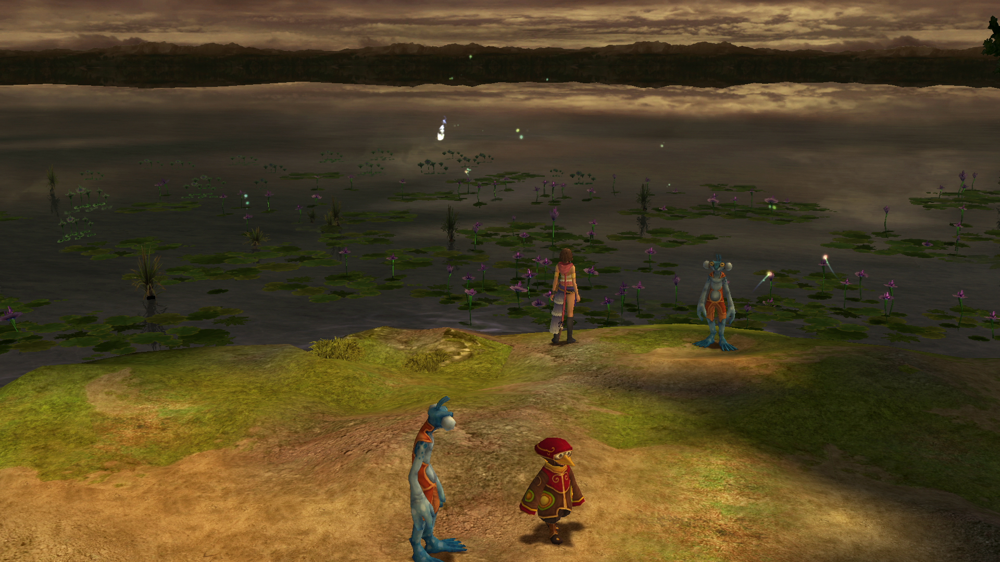
The Moonflow is a large river that bisects Spira's main continent into southern and northern sides in Final Fantasy X and Final Fantasy X-2. The primary method of crossing is on shoopuf, an elephantine creature that can swim across the expansive river; the crossing service is funded by the Temple of Yevon, and is free of charge. Moonlilies (幻光花, Genkōka?, lit. Pyreflower) grow on the Moonflow's banks and pyreflies gather on its surface at night, making the water sparkle. Although a beautiful area, the weather is always overcast. The Red Lotus Lake in Kumphawapi, Thailand is possibly an inspiration for Moonflow.
The South Bank road is a long, straightforward stretch running between the Djose Highroad and the banks of the Moonflow proper. In Final Fantasy X, there is a chest near Shelinda, containing three Lv. 1 Key Spheres. Near the turn in the road is a chest with an X-Potion. On the right side of the road, in the grass, is another chest with three more Lv. 1 Key Spheres. Belgemine may be found near the end of the road, and challenging her to the battle will reward the party with the capability of adding abilities to aeons, along with Dragon Scale x2 for winning or Smoke Bomb x6 for losing. Just past her on the left is a hidden thicket containing a Magic Def Sphere.
Macalania
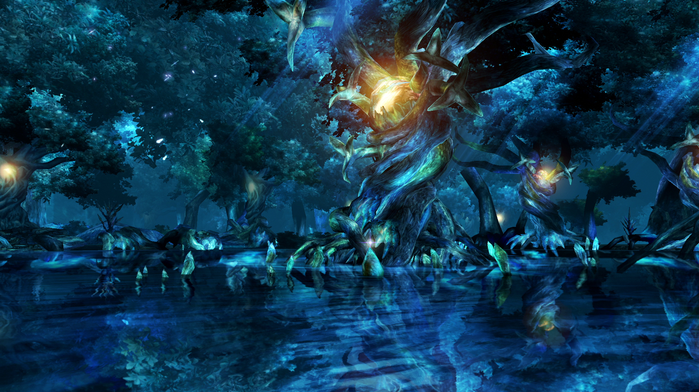
Macalania is a region in Final Fantasy X and Final Fantasy X-2. It is located in the north area of Spira just south of Bevelle. Macalania is a watery region focused around Lake Macalania. In the games, it's revealed that the life sustainability and everlasting cold is done by the fayth, and when they were put to rest, a lot of the snow and ice began to melt as the wildlife could no longer survive.
The Macalania Woods are located in the southern areas around the lake. It is a magical forest filled with springs infused with pyreflies. The ancestral protectors of Macalania are the three races of musicians. The woods are a junction point for several other locations, being connected to the Thunder Plains at the southern end, to Bevelle in the west, and to the Calm Lands in the east, and Lake Macalania in the north.
Bikanel Island

Bikanel is an island to the west of the Spira mainland in Final Fantasy X and Final Fantasy X-2. It is primarily a large, arid desert with an oasis, featuring palm trees and a drinkable water source. Many ruins and sand-swept campsites dot the landscape. The Al Bhed town Home is situated in the middle of the desert.
If one returns to the desert after visiting Home in Final Fantasy X, the player can find two Al Bhed men blocking the way. If one tries to pass they'll simply engage into conversation with each other, and the player explaining that there is nothing to find that way. In some International versions, it is possible to return to Home after acquiring the airship, but it results in a glitch.
Bevelle
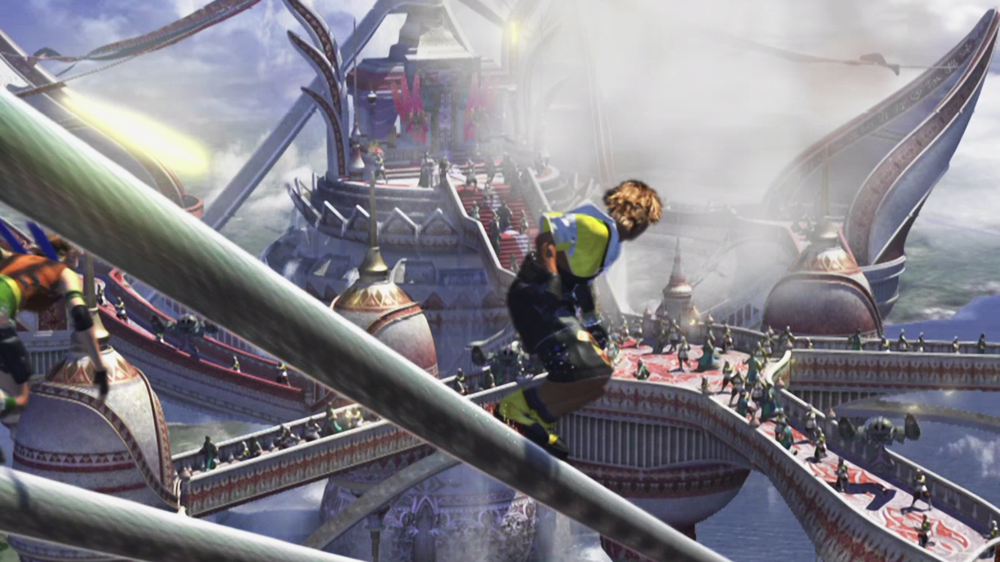
Bevelle is at the heart of Spira, even today. It's also the place where I was born. I suppose that makes it my hometown, but I can't say that I have a lot of fond memories here.
- Yuna
Bevelle [bəˈvɛɫ] is a city in Final Fantasy X, Final Fantasy X-2, and Final Fantasy X -Will-. The capital of Spira's dogmatic society; it is initially the home of the Yevon religion and, later, the New Yevon party. Being Yuna's birthplace, it remained her home until her father, High Summoner Braska, defeated Sin. In Final Fantasy X, the Warrior Monks and the fiend Evrae protect the city, and Sin rarely attacks it.
Situated inside Bevelle Temple is a Chamber of the Fayth where the aeon Bahamut resides. Infiltrated without Yevon's blessings, its architecture uses sophisticated machina technology despite the machina ban. The cloister, consisting of a labyrinth of powered walkways and mystic seals housed in a mechanical framework, leads to the temple's fayth—the boy who serves as Tidus's "guide" in Spira.
Mt Gagazet
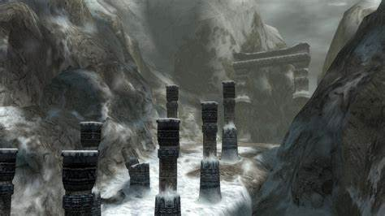
Gagazet is Ronso land, sacred mountain of Yevon. The mountain will not bear the footsteps of infidels!
- Kelk
Mt. Gagazet is a location in Final Fantasy X and Final Fantasy X-2. It is the home of the Ronso and gateway to the Holy City of Zanarkand in the world of Spira.
The snow-covered, towering Mt. Gagazet is considered sacred land. Before the Eternal Calm only summoners and their guardians were permitted to pass beyond the mountain gate as the final test of the summoner's resolve before entering the Zanarkand Ruins.